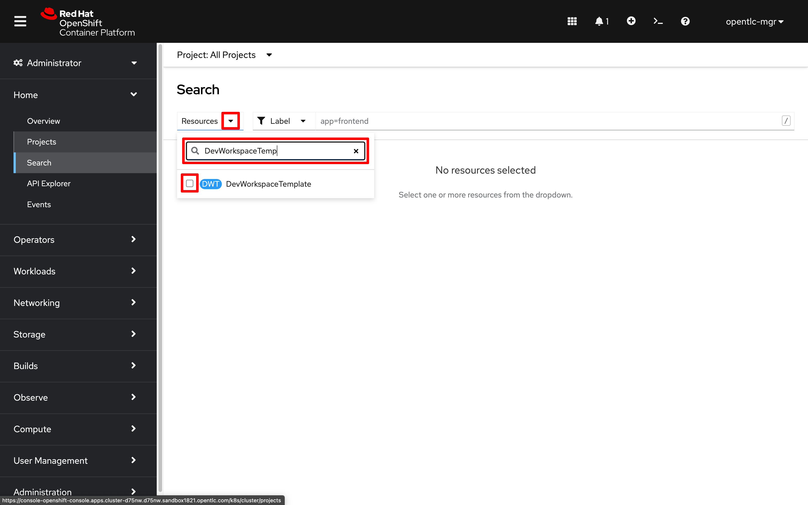
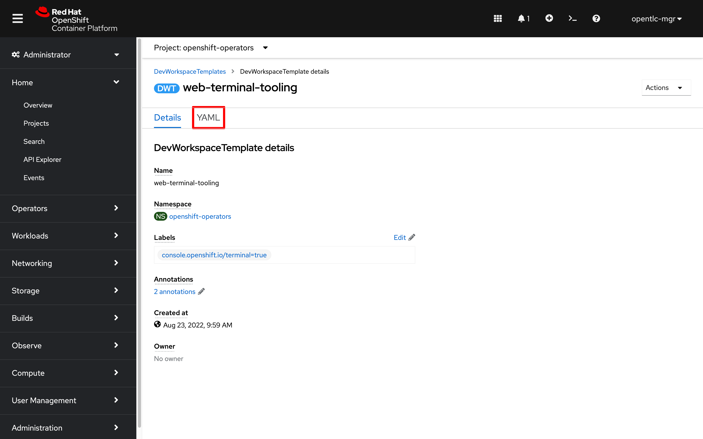

3. Cluster Customizations (Blue)
3.0 User Access
Establish a shared project namespace that everyone on the team can use:
-
Use an admin account to create a new project:
oc new-project blue-team -
Provide existing user accounts with access to the
blue-teamproject namespace:for user in {1..10}; do oc adm policy add-role-to-user edit user$user ; done
3.1 Console Notifications
-
Click on the
Import(+) link in the web console header. Paste the following YAML into the text editing area:apiVersion: console.openshift.io/v1 kind: ConsoleNotification metadata: name: hackathon-banner spec: text: Welcome to the Blue Team OpenShift cluster for the Summit Connect Hackathon! location: BannerTop link: href: 'https://github.com/redhat-scholars/quickstart-workshop/tree/master/apps/blue' text: (View Code for the Blue Team Cluster) color: '#fafafa' backgroundColor: '#1919f6' -
Click
Createto make the newConsoleNotificationvisible to all cluster users
3.2 Customize the Header Logo
-
Download an image to use for a header logo
-
Store the image data in a Kubernetes configmap
oc create configmap console-custom-logo --from-file /tmp/logo.png -n openshift-config -
Paste the following to create a YAML patch file. This file holds the updated cluster console operator configuration pointing to the
console-custom-logoconfigmap:cat <<EOF > /tmp/patch.yaml spec: customization: customLogoFile: key: logo.png name: console-custom-logo EOF -
Patch the console cluster operator configuration:
oc patch consoles.operator.openshift.io cluster --type merge --patch-file /tmp/patch.yaml
{kind=link}
3.3 Configure Web Terminal
Update the cluster default terminal image by modifying the DevWorkspaceTemplate/web-terminal-tooling resource:
-
Search All Projects for resources of type
DevWorkspaceTemplate

-
Select the resource named
web-terminal-tooling -
Click on
YAMLto modify the terminal settings
-
Add a new annotation after line 5:
web-terminal.redhat.com/unmanaged-state: "true" -
Replace the
spec.components[].container.imageurl with:quay.io/ryan_j/summitconnect:4.10.25 -
Click
Saveto set the new default terminal image for the cluster -
Close and restart your Web Terminal
-
In a new terminal, check the version of the
occommand line tool:oc versionClient Version: 4.10.25 Server Version: 4.10.26 Kubernetes Version: v1.23.5+012e945If you don’t see an updated client release available, use the following command to refresh the outdated web terminal tooling pod:
oc delete pod -l 'controller.devfile.io/devworkspace_id'There will be a brief pause while the Web Terminal tooling container is replaced
|
Non-admin users can also quickly override the default terminal image (without setting a new cluster default) using the |
3.4 Installing a custom QuickStart
-
Install the blue team quickstart, which guides you through provisioning Operators to manage a backend database and automate application connections to it:
-
Open the QuickStarts catalog from the Help icon near the top right of the web console. Search the QuickStarts for the string "service binding" to filter the catalog until you find the QuickStart titled Summit Connect Hackathon - Service Binding.
-
Click the QuickStart and follow the steps in it to deploy both tiers of a simple veterinary practice management application, the PetClinic.